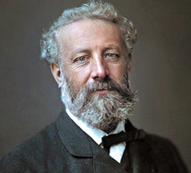
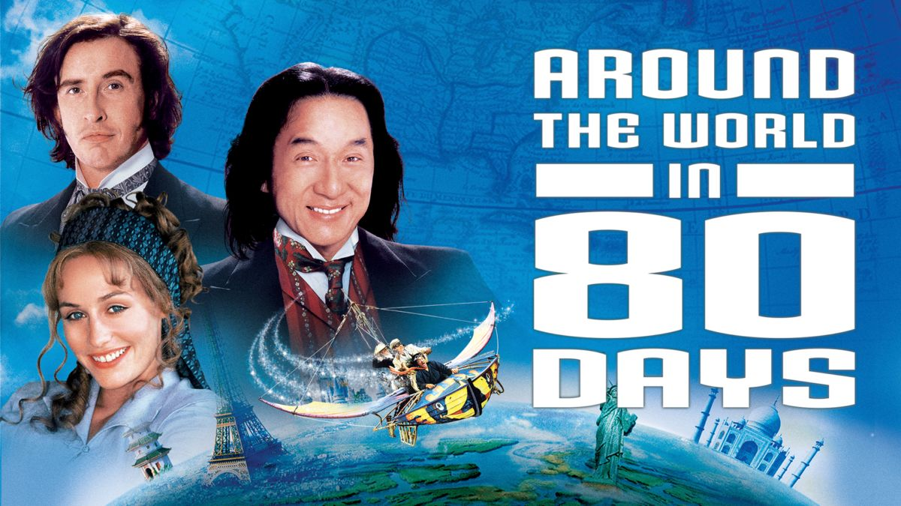
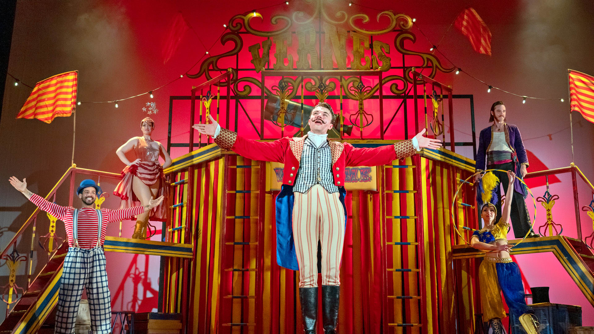

¡DESCUBRE DE ESTE FANTÁSTICO VIAJE ESCRITO POR JULIO VERNE!
La vuelta al mundo en ochenta días (Le Tour du monde en quatre-vingts jours) es una novela del escritor francés Julio Verne publicada por entregas en Le Temps desde el 7 de noviembre (número 4225) hasta el 22 de diciembre (número 4271) de 1872, el mismo año en que se sitúa la acción. Después, sería publicada íntegramente el 30 de enero de 1873.
¡LA TRAMA DETRÁS DE ESTE MARAVILLOSO VIAJE!
Phileas Fogg es un adinerado caballero inglés que lleva una tranquila y solitaria vida en Londres. A pesar de su fortuna, Phileas Fogg vive modestamente y lleva a cabo sus hábitos y costumbres con una precisión matemática. La tarde del 2 de octubre de 1872, Phileas Fogg debate con sus compañeros en el Reform Club sobre un artículo publicado en el Daily Telegraph que afirma que, tras la apertura de una nueva vía de ferrocarril en la India, es posible viajar alrededor del mundo en solo 80 días. Phileas Fogg apuesta 20.000 libras, la mitad de su fortuna, con sus compañeros del club a que es capaz de viajar alrededor del mundo en ese tiempo. Acompañado por Passepartout, Phileas Fogg parte de Londres en tren a las 8:45 p. m. de ese mismo día; para ganar la apuesta, debe volver al Reform Club a la misma hora el 21 de diciembre, exactamente 80 días después. Phileas Fogg se lleva las 20.000 libras restantes de su fortuna para cubrir los gastos del viaje.

El itinerario planeado, de acuerdo con la noticia del Daily Telegraph, es el siguiente:
- De Londres a Suez.
- De Suez a Bombay.
- De Bombay a Calcuta.
- De Calcuta a Victoria.
- De Victoria a Yokohama.
- De Yokohama a San Francisco.
- De San Francisco a Nueva York.
- De Nueva York a Londres.
¡ANTE USTEDES, JULIO VERNE!
¡ESTAS SON LAS ADAPTACIONES DEL LIBRO!
-
flightLa Vuelta al Mundo en 80 Días (Walt Disney Pictures) Es una película estadounidense de comedia y aventura con estilo Steampunk de 2004, basada en la novela homónima de Julio Verne y dirigida por Frank Coraci. Está protagonizada por Jackie Chan, Steve Coogan y Cécile de France.
La película está ambientada en la Inglaterra de finales del siglo xix y se centra en Phileas Fogg (Steve Coogan), presentado como un inventor excéntrico y sus esfuerzos por circunnavegar el globo terráqueo en 80 días. Durante la odisea, es acompañado por su ayuda de cámara chino Passepartout (Jackie Chan), cuyo verdadero nombre es Lau Xhing, y por la artista francesa Monique La Roche (Cécile de France). Debido a su carácter de comedia, la película se desvía intencionalmente de la novela e incluye varios elementos anacrónicos. -
directions_boatLa Vuelta al Mundo en 80 Días (Obra de Teatro)En el Teatro Nacional Cervantes. Buenos Aires, Argentina.
Adaptación y dirección: Hernán Gené. Elenco: Eduardo Bertoglio, Rubén Panunzio, Valeria Bertucceli, Daniel Miranda, Marcelo Silva, Pablo Ruiz, Horacio Gabín. Escenografía y Vestuario: Marta Albertinazzi. Iluminación: Tito Diz. Producido por: Paco Poblet y Ana Albarellos. -
trainLa Vuelta al Mundo de Willy FogLa vuelta al mundo de Willy Fog, producida en 1983, es una serie de dibujos animados basada en la obra de Julio Verne La vuelta al mundo en ochenta días con animales antropomorfizados.
Fue una coproducción hispano-japonesa realizada por Nippon Animation bajo encargo de BRB Internacional, asociada a Televisión Española, al igual que series como D'Artacan y los tres mosqueperros.